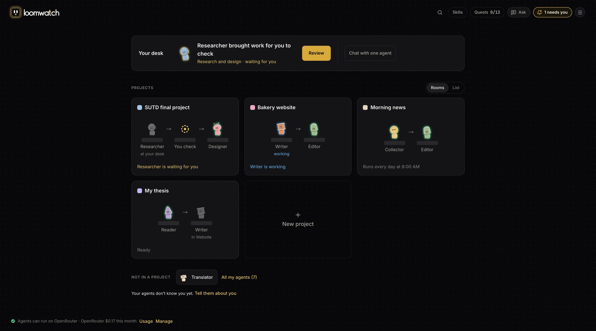
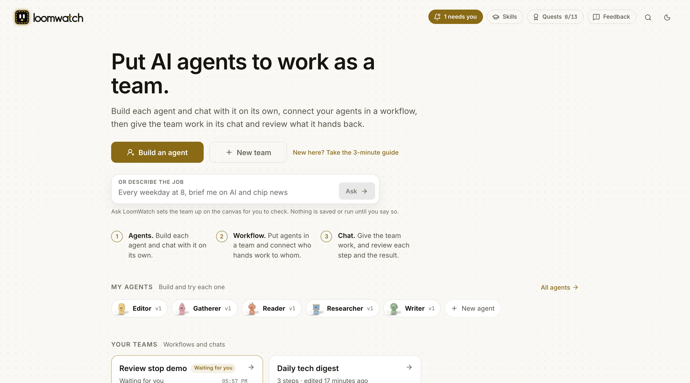

Get started with LoomWatch. Your first AI team in a few minutes.
LoomWatch is a free app that puts a few AI helpers, called agents, to work on one job together, and shows you every step. This guide installs it and runs a practice team that needs no account, no key and no code.
What you need
- A Mac with macOS 11 or newer (Apple silicon or Intel), or a Windows PC with 64-bit Windows 10 or 11.
- Nothing else to install first. You don't need a ChatGPT, Claude or Gemini account, and you don't need to know how to code.
- For real work later, one OpenRouter key. The practice team below needs no key and costs nothing.
Install on a Mac
- Download LoomWatch-macos.dmg (about 30 MB) and open it.
- Drag LoomWatch into Applications.
- Open LoomWatch from Applications.
If macOS won't open it: LoomWatch isn't notarized by Apple yet, so the first time macOS may say it can't check it for harmful software. Click Done, open System Settings › Privacy & Security, scroll down and click Open Anyway beside LoomWatch. macOS asks only once.
LoomWatch opens in your web browser and puts a small icon in the menu bar at the top of your screen. There is no window to keep open: closing the browser tab leaves LoomWatch running, and you quit it from that icon.
Install on Windows
- Download LoomWatch-windows-setup.exe and open it.
- It installs LoomWatch for you alone (no administrator needed), adds it to the Start menu and opens it.
If Windows says it protected your PC: LoomWatch isn't signed with a code-signing certificate yet. Click More info, then Run anyway.
LoomWatch opens in your web browser and keeps an icon beside the clock (click the ^ there if you can't see it). Click the icon to open LoomWatch again. Rather install from Terminal or PowerShell? The one-line commands are on the home page.
Your first run, with the practice team
LoomWatch comes with a practice team called Review stop demo. It has three steps: a Researcher, then you, then a Writer. Its agents give fixed answers instead of asking a real AI model, so you can learn how everything works for free.


- On Home, under Your teams, pick Review stop demo and open its Chat tab.
- Type
@team Prepare a short getting-started guide for new users.and press Enter. A message starts work only when it has an @ in it. - The team stops for you. The chat shows what the Researcher handed over, with Approve and Send back to Researcher under it.
- To ask for a change, type
Use the short guide and remove the detailed walkthrough.and click Send back to Researcher. The Researcher tries again and asks you again. - Click Approve to let the team go on. To pass a note to the Writer, type it first: the button becomes Approve with your note.
- Read the team's answer in the chat. The practice Writer repeats the direction you gave it, so you can see your note arrived.


Everything the team did stays in its chat. Click Details on any message to see each step, and drag the timeline there to replay what happened.
Rather be shown around?
The first time you open LoomWatch, a short guide offers to walk you through building your first agent, trying it on its own, putting it in a team and running it. That last part uses your OpenRouter key. Open the guide again any time with New here? Take the 3-minute guide on Home.